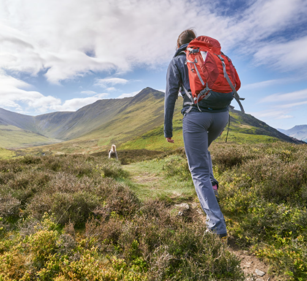
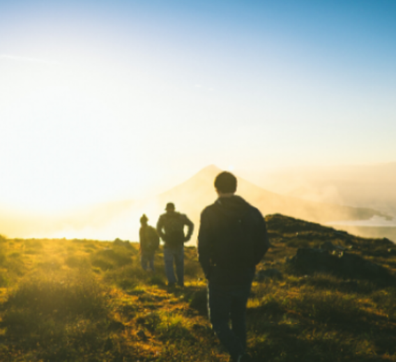
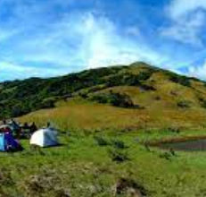
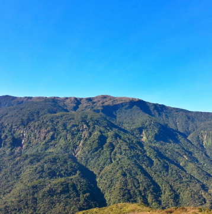

Discover Mount Calavite
Explore the stunning beauty of Mount Calavite in Paluan, Occidental Mindoro. This majestic mountain offers a thrilling hiking experience with panoramic views and diverse landscapes.
Whether you seek a challenging ascent or a leisurely trek, Mount Calavite has trails suitable for all levels of hikers. Immerse yourself in the natural wonders of Occidental Mindoro and create unforgettable memories along the way.



